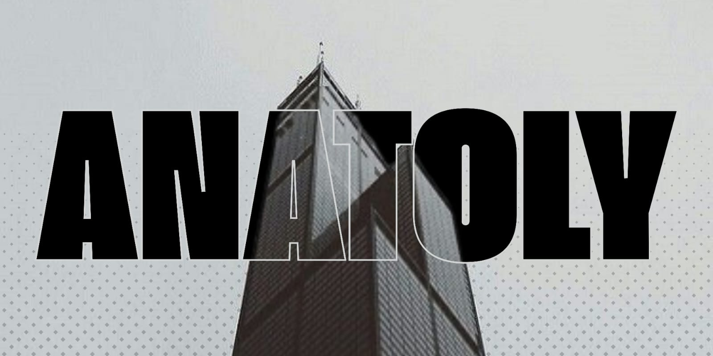
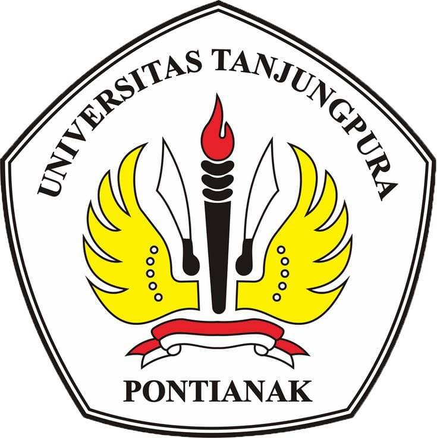
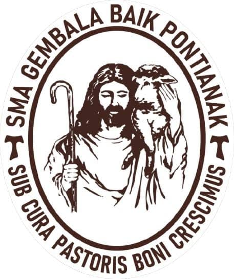
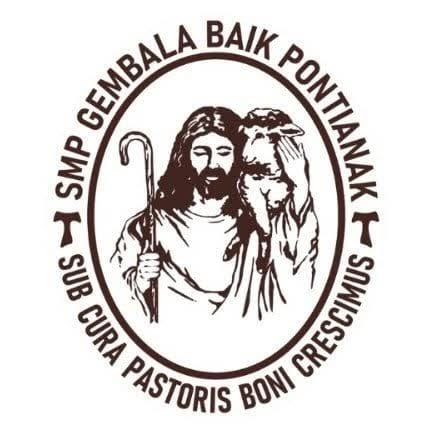
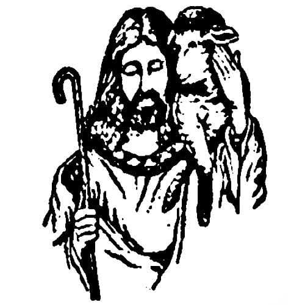

🛒
Halo, saya
Mahasiswa Sistem Informasi Universitas Tanjungpura. Suka dalam menerjemahkan problematika sehari-hari dalam bahasa pemrograman.
Mahasiswa yang senang belajar, berkembang, dan beradaptasi.

Saya merupakan mahasiswa Sistem Informasi di Universitas Tanjungpura, Pontianak. Saya tertarik pada pengembangan web, analisis data, dan perancangan sistem yang benar-benar dipakai orang.
Di luar kuliah, saya mengerjakan proyek kecil, mengikuti pelatihan, dan belajar teknologi baru setiap bulan. Hobi saya bermain game, menggambar, dan editing.
Menyusun halaman web yang rapi dan responsif, baik di HP maupun laptop.
Mempelajari interaksi dasar seperti animasi, filter, dan pengolahan elemen halaman.
Menguasai dasar-dasar Python: variabel, perulangan, fungsi, dan pengolahan data sederhana.
Pendidikan dan prestasi yang membentuk perjalanan saya.

Fokus pada pengembangan aplikasi, basis data, dan analisis sistem.

Aktif sebagai siswa peminatan MIPA serta mengikuti English Club

Mengikuti les matematika serta mendapat rangking atas.

Aktif di ekskul bahasa inggris dan bahasa mandarin, serta mengikuti kepramukaan.
Beberapa hasil kerja yang paling saya banggakan.
Punya ide, tawaran magang, atau sekadar ingin berdiskusi? Hubungi saya lewat kontak di bawah ini.